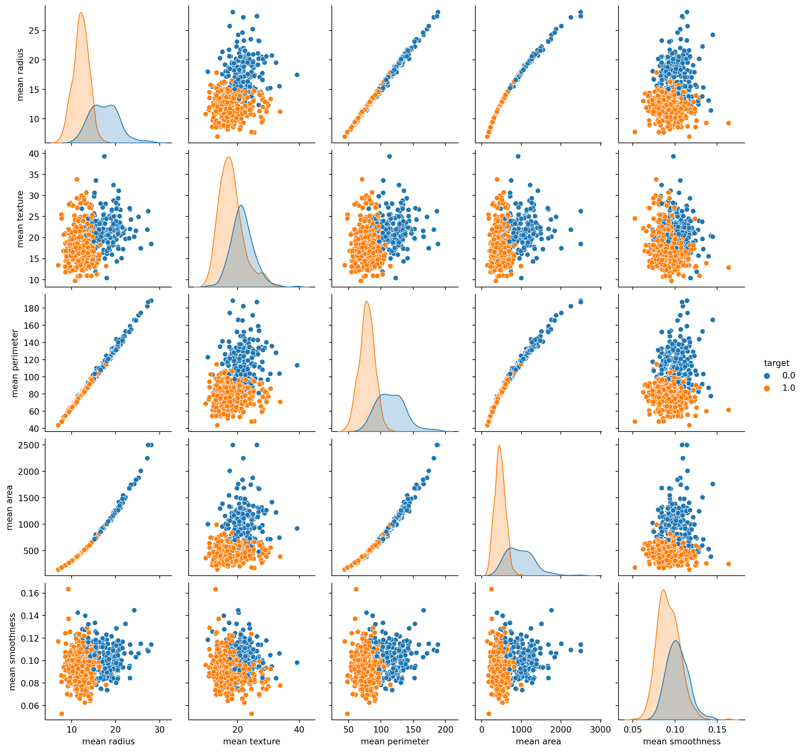
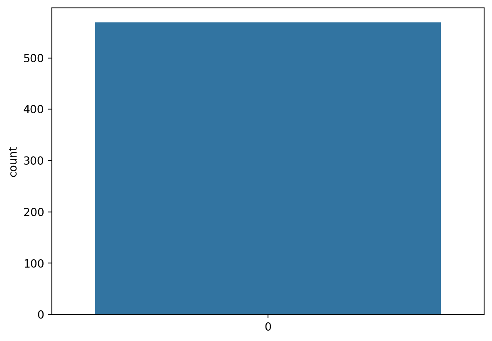
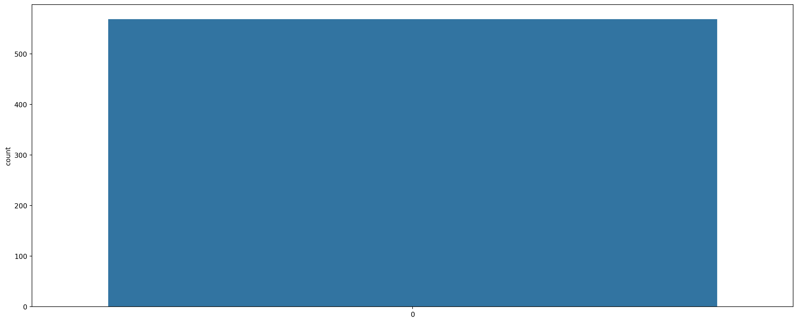

# import libraries
import pandas as pd # for data manupulation or analysis
import numpy as np # for numeric calculation
import matplotlib.pyplot as plt # for data visualization
import seaborn as sns # for data visualization
import pickle #for dumping the model or we can use joblib libraryBreast Cancer classification Using Machine Learning Classifier
Import libraries
# Suppressing Warnings
import warnings
warnings.filterwarnings('ignore')Data Load
#Load breast cancer dataset
from sklearn.datasets import load_breast_cancer# Breast cancer dataset for classification
data = load_breast_cancer()
print (data.feature_names)
print (data.target_names)['mean radius' 'mean texture' 'mean perimeter' 'mean area'
'mean smoothness' 'mean compactness' 'mean concavity'
'mean concave points' 'mean symmetry' 'mean fractal dimension'
'radius error' 'texture error' 'perimeter error' 'area error'
'smoothness error' 'compactness error' 'concavity error'
'concave points error' 'symmetry error' 'fractal dimension error'
'worst radius' 'worst texture' 'worst perimeter' 'worst area'
'worst smoothness' 'worst compactness' 'worst concavity'
'worst concave points' 'worst symmetry' 'worst fractal dimension']
['malignant' 'benign']cancer_dataset = load_breast_cancer()Data Manupulation
type(cancer_dataset)sklearn.utils._bunch.Bunch# keys in dataset
cancer_dataset.keys()dict_keys(['data', 'target', 'frame', 'target_names', 'DESCR', 'feature_names', 'filename', 'data_module'])# target value name malignant or benign tumor
cancer_dataset['target_names']array(['malignant', 'benign'], dtype='<U9')# description of data
print(cancer_dataset['DESCR']).. _breast_cancer_dataset:
Breast cancer wisconsin (diagnostic) dataset
--------------------------------------------
**Data Set Characteristics:**
:Number of Instances: 569
:Number of Attributes: 30 numeric, predictive attributes and the class
:Attribute Information:
- radius (mean of distances from center to points on the perimeter)
- texture (standard deviation of gray-scale values)
- perimeter
- area
- smoothness (local variation in radius lengths)
- compactness (perimeter^2 / area - 1.0)
- concavity (severity of concave portions of the contour)
- concave points (number of concave portions of the contour)
- symmetry
- fractal dimension ("coastline approximation" - 1)
The mean, standard error, and "worst" or largest (mean of the three
worst/largest values) of these features were computed for each image,
resulting in 30 features. For instance, field 0 is Mean Radius, field
10 is Radius SE, field 20 is Worst Radius.
- class:
- WDBC-Malignant
- WDBC-Benign
:Summary Statistics:
===================================== ====== ======
Min Max
===================================== ====== ======
radius (mean): 6.981 28.11
texture (mean): 9.71 39.28
perimeter (mean): 43.79 188.5
area (mean): 143.5 2501.0
smoothness (mean): 0.053 0.163
compactness (mean): 0.019 0.345
concavity (mean): 0.0 0.427
concave points (mean): 0.0 0.201
symmetry (mean): 0.106 0.304
fractal dimension (mean): 0.05 0.097
radius (standard error): 0.112 2.873
texture (standard error): 0.36 4.885
perimeter (standard error): 0.757 21.98
area (standard error): 6.802 542.2
smoothness (standard error): 0.002 0.031
compactness (standard error): 0.002 0.135
concavity (standard error): 0.0 0.396
concave points (standard error): 0.0 0.053
symmetry (standard error): 0.008 0.079
fractal dimension (standard error): 0.001 0.03
radius (worst): 7.93 36.04
texture (worst): 12.02 49.54
perimeter (worst): 50.41 251.2
area (worst): 185.2 4254.0
smoothness (worst): 0.071 0.223
compactness (worst): 0.027 1.058
concavity (worst): 0.0 1.252
concave points (worst): 0.0 0.291
symmetry (worst): 0.156 0.664
fractal dimension (worst): 0.055 0.208
===================================== ====== ======
:Missing Attribute Values: None
:Class Distribution: 212 - Malignant, 357 - Benign
:Creator: Dr. William H. Wolberg, W. Nick Street, Olvi L. Mangasarian
:Donor: Nick Street
:Date: November, 1995
This is a copy of UCI ML Breast Cancer Wisconsin (Diagnostic) datasets.
https://goo.gl/U2Uwz2
Features are computed from a digitized image of a fine needle
aspirate (FNA) of a breast mass. They describe
characteristics of the cell nuclei present in the image.
Separating plane described above was obtained using
Multisurface Method-Tree (MSM-T) [K. P. Bennett, "Decision Tree
Construction Via Linear Programming." Proceedings of the 4th
Midwest Artificial Intelligence and Cognitive Science Society,
pp. 97-101, 1992], a classification method which uses linear
programming to construct a decision tree. Relevant features
were selected using an exhaustive search in the space of 1-4
features and 1-3 separating planes.
The actual linear program used to obtain the separating plane
in the 3-dimensional space is that described in:
[K. P. Bennett and O. L. Mangasarian: "Robust Linear
Programming Discrimination of Two Linearly Inseparable Sets",
Optimization Methods and Software 1, 1992, 23-34].
This database is also available through the UW CS ftp server:
ftp ftp.cs.wisc.edu
cd math-prog/cpo-dataset/machine-learn/WDBC/
|details-start|
**References**
|details-split|
- W.N. Street, W.H. Wolberg and O.L. Mangasarian. Nuclear feature extraction
for breast tumor diagnosis. IS&T/SPIE 1993 International Symposium on
Electronic Imaging: Science and Technology, volume 1905, pages 861-870,
San Jose, CA, 1993.
- O.L. Mangasarian, W.N. Street and W.H. Wolberg. Breast cancer diagnosis and
prognosis via linear programming. Operations Research, 43(4), pages 570-577,
July-August 1995.
- W.H. Wolberg, W.N. Street, and O.L. Mangasarian. Machine learning techniques
to diagnose breast cancer from fine-needle aspirates. Cancer Letters 77 (1994)
163-171.
|details-end|# name of features
print(cancer_dataset['feature_names'])['mean radius' 'mean texture' 'mean perimeter' 'mean area'
'mean smoothness' 'mean compactness' 'mean concavity'
'mean concave points' 'mean symmetry' 'mean fractal dimension'
'radius error' 'texture error' 'perimeter error' 'area error'
'smoothness error' 'compactness error' 'concavity error'
'concave points error' 'symmetry error' 'fractal dimension error'
'worst radius' 'worst texture' 'worst perimeter' 'worst area'
'worst smoothness' 'worst compactness' 'worst concavity'
'worst concave points' 'worst symmetry' 'worst fractal dimension']# location/path of data file
print(cancer_dataset['filename'])breast_cancer.csvCreate DataFrame
# create datafrmae
cancer_df = pd.DataFrame(np.c_[cancer_dataset['data'],cancer_dataset['target']],
columns = np.append(cancer_dataset['feature_names'], ['target']))# DataFrame to CSV file
cancer_df.to_csv('breast_cancer_dataframe.csv')# Head of cancer DataFrame
cancer_df.head(6) | mean radius | mean texture | mean perimeter | mean area | mean smoothness | mean compactness | mean concavity | mean concave points | mean symmetry | mean fractal dimension | ... | worst texture | worst perimeter | worst area | worst smoothness | worst compactness | worst concavity | worst concave points | worst symmetry | worst fractal dimension | target | |
|---|---|---|---|---|---|---|---|---|---|---|---|---|---|---|---|---|---|---|---|---|---|
| 0 | 17.99 | 10.38 | 122.80 | 1001.0 | 0.11840 | 0.27760 | 0.3001 | 0.14710 | 0.2419 | 0.07871 | ... | 17.33 | 184.60 | 2019.0 | 0.1622 | 0.6656 | 0.7119 | 0.2654 | 0.4601 | 0.11890 | 0.0 |
| 1 | 20.57 | 17.77 | 132.90 | 1326.0 | 0.08474 | 0.07864 | 0.0869 | 0.07017 | 0.1812 | 0.05667 | ... | 23.41 | 158.80 | 1956.0 | 0.1238 | 0.1866 | 0.2416 | 0.1860 | 0.2750 | 0.08902 | 0.0 |
| 2 | 19.69 | 21.25 | 130.00 | 1203.0 | 0.10960 | 0.15990 | 0.1974 | 0.12790 | 0.2069 | 0.05999 | ... | 25.53 | 152.50 | 1709.0 | 0.1444 | 0.4245 | 0.4504 | 0.2430 | 0.3613 | 0.08758 | 0.0 |
| 3 | 11.42 | 20.38 | 77.58 | 386.1 | 0.14250 | 0.28390 | 0.2414 | 0.10520 | 0.2597 | 0.09744 | ... | 26.50 | 98.87 | 567.7 | 0.2098 | 0.8663 | 0.6869 | 0.2575 | 0.6638 | 0.17300 | 0.0 |
| 4 | 20.29 | 14.34 | 135.10 | 1297.0 | 0.10030 | 0.13280 | 0.1980 | 0.10430 | 0.1809 | 0.05883 | ... | 16.67 | 152.20 | 1575.0 | 0.1374 | 0.2050 | 0.4000 | 0.1625 | 0.2364 | 0.07678 | 0.0 |
| 5 | 12.45 | 15.70 | 82.57 | 477.1 | 0.12780 | 0.17000 | 0.1578 | 0.08089 | 0.2087 | 0.07613 | ... | 23.75 | 103.40 | 741.6 | 0.1791 | 0.5249 | 0.5355 | 0.1741 | 0.3985 | 0.12440 | 0.0 |
6 rows × 31 columns
# Tail of cancer DataFrame
cancer_df.tail(6) | mean radius | mean texture | mean perimeter | mean area | mean smoothness | mean compactness | mean concavity | mean concave points | mean symmetry | mean fractal dimension | ... | worst texture | worst perimeter | worst area | worst smoothness | worst compactness | worst concavity | worst concave points | worst symmetry | worst fractal dimension | target | |
|---|---|---|---|---|---|---|---|---|---|---|---|---|---|---|---|---|---|---|---|---|---|
| 563 | 20.92 | 25.09 | 143.00 | 1347.0 | 0.10990 | 0.22360 | 0.31740 | 0.14740 | 0.2149 | 0.06879 | ... | 29.41 | 179.10 | 1819.0 | 0.14070 | 0.41860 | 0.6599 | 0.2542 | 0.2929 | 0.09873 | 0.0 |
| 564 | 21.56 | 22.39 | 142.00 | 1479.0 | 0.11100 | 0.11590 | 0.24390 | 0.13890 | 0.1726 | 0.05623 | ... | 26.40 | 166.10 | 2027.0 | 0.14100 | 0.21130 | 0.4107 | 0.2216 | 0.2060 | 0.07115 | 0.0 |
| 565 | 20.13 | 28.25 | 131.20 | 1261.0 | 0.09780 | 0.10340 | 0.14400 | 0.09791 | 0.1752 | 0.05533 | ... | 38.25 | 155.00 | 1731.0 | 0.11660 | 0.19220 | 0.3215 | 0.1628 | 0.2572 | 0.06637 | 0.0 |
| 566 | 16.60 | 28.08 | 108.30 | 858.1 | 0.08455 | 0.10230 | 0.09251 | 0.05302 | 0.1590 | 0.05648 | ... | 34.12 | 126.70 | 1124.0 | 0.11390 | 0.30940 | 0.3403 | 0.1418 | 0.2218 | 0.07820 | 0.0 |
| 567 | 20.60 | 29.33 | 140.10 | 1265.0 | 0.11780 | 0.27700 | 0.35140 | 0.15200 | 0.2397 | 0.07016 | ... | 39.42 | 184.60 | 1821.0 | 0.16500 | 0.86810 | 0.9387 | 0.2650 | 0.4087 | 0.12400 | 0.0 |
| 568 | 7.76 | 24.54 | 47.92 | 181.0 | 0.05263 | 0.04362 | 0.00000 | 0.00000 | 0.1587 | 0.05884 | ... | 30.37 | 59.16 | 268.6 | 0.08996 | 0.06444 | 0.0000 | 0.0000 | 0.2871 | 0.07039 | 1.0 |
6 rows × 31 columns
# Information of cancer Dataframe
cancer_df.info()<class 'pandas.core.frame.DataFrame'>
RangeIndex: 569 entries, 0 to 568
Data columns (total 31 columns):
# Column Non-Null Count Dtype
--- ------ -------------- -----
0 mean radius 569 non-null float64
1 mean texture 569 non-null float64
2 mean perimeter 569 non-null float64
3 mean area 569 non-null float64
4 mean smoothness 569 non-null float64
5 mean compactness 569 non-null float64
6 mean concavity 569 non-null float64
7 mean concave points 569 non-null float64
8 mean symmetry 569 non-null float64
9 mean fractal dimension 569 non-null float64
10 radius error 569 non-null float64
11 texture error 569 non-null float64
12 perimeter error 569 non-null float64
13 area error 569 non-null float64
14 smoothness error 569 non-null float64
15 compactness error 569 non-null float64
16 concavity error 569 non-null float64
17 concave points error 569 non-null float64
18 symmetry error 569 non-null float64
19 fractal dimension error 569 non-null float64
20 worst radius 569 non-null float64
21 worst texture 569 non-null float64
22 worst perimeter 569 non-null float64
23 worst area 569 non-null float64
24 worst smoothness 569 non-null float64
25 worst compactness 569 non-null float64
26 worst concavity 569 non-null float64
27 worst concave points 569 non-null float64
28 worst symmetry 569 non-null float64
29 worst fractal dimension 569 non-null float64
30 target 569 non-null float64
dtypes: float64(31)
memory usage: 137.9 KB# Numerical distribution of data
cancer_df.describe() | mean radius | mean texture | mean perimeter | mean area | mean smoothness | mean compactness | mean concavity | mean concave points | mean symmetry | mean fractal dimension | ... | worst texture | worst perimeter | worst area | worst smoothness | worst compactness | worst concavity | worst concave points | worst symmetry | worst fractal dimension | target | |
|---|---|---|---|---|---|---|---|---|---|---|---|---|---|---|---|---|---|---|---|---|---|
| count | 569.000000 | 569.000000 | 569.000000 | 569.000000 | 569.000000 | 569.000000 | 569.000000 | 569.000000 | 569.000000 | 569.000000 | ... | 569.000000 | 569.000000 | 569.000000 | 569.000000 | 569.000000 | 569.000000 | 569.000000 | 569.000000 | 569.000000 | 569.000000 |
| mean | 14.127292 | 19.289649 | 91.969033 | 654.889104 | 0.096360 | 0.104341 | 0.088799 | 0.048919 | 0.181162 | 0.062798 | ... | 25.677223 | 107.261213 | 880.583128 | 0.132369 | 0.254265 | 0.272188 | 0.114606 | 0.290076 | 0.083946 | 0.627417 |
| std | 3.524049 | 4.301036 | 24.298981 | 351.914129 | 0.014064 | 0.052813 | 0.079720 | 0.038803 | 0.027414 | 0.007060 | ... | 6.146258 | 33.602542 | 569.356993 | 0.022832 | 0.157336 | 0.208624 | 0.065732 | 0.061867 | 0.018061 | 0.483918 |
| min | 6.981000 | 9.710000 | 43.790000 | 143.500000 | 0.052630 | 0.019380 | 0.000000 | 0.000000 | 0.106000 | 0.049960 | ... | 12.020000 | 50.410000 | 185.200000 | 0.071170 | 0.027290 | 0.000000 | 0.000000 | 0.156500 | 0.055040 | 0.000000 |
| 25% | 11.700000 | 16.170000 | 75.170000 | 420.300000 | 0.086370 | 0.064920 | 0.029560 | 0.020310 | 0.161900 | 0.057700 | ... | 21.080000 | 84.110000 | 515.300000 | 0.116600 | 0.147200 | 0.114500 | 0.064930 | 0.250400 | 0.071460 | 0.000000 |
| 50% | 13.370000 | 18.840000 | 86.240000 | 551.100000 | 0.095870 | 0.092630 | 0.061540 | 0.033500 | 0.179200 | 0.061540 | ... | 25.410000 | 97.660000 | 686.500000 | 0.131300 | 0.211900 | 0.226700 | 0.099930 | 0.282200 | 0.080040 | 1.000000 |
| 75% | 15.780000 | 21.800000 | 104.100000 | 782.700000 | 0.105300 | 0.130400 | 0.130700 | 0.074000 | 0.195700 | 0.066120 | ... | 29.720000 | 125.400000 | 1084.000000 | 0.146000 | 0.339100 | 0.382900 | 0.161400 | 0.317900 | 0.092080 | 1.000000 |
| max | 28.110000 | 39.280000 | 188.500000 | 2501.000000 | 0.163400 | 0.345400 | 0.426800 | 0.201200 | 0.304000 | 0.097440 | ... | 49.540000 | 251.200000 | 4254.000000 | 0.222600 | 1.058000 | 1.252000 | 0.291000 | 0.663800 | 0.207500 | 1.000000 |
8 rows × 31 columns
cancer_df.isnull().sum()mean radius 0
mean texture 0
mean perimeter 0
mean area 0
mean smoothness 0
mean compactness 0
mean concavity 0
mean concave points 0
mean symmetry 0
mean fractal dimension 0
radius error 0
texture error 0
perimeter error 0
area error 0
smoothness error 0
compactness error 0
concavity error 0
concave points error 0
symmetry error 0
fractal dimension error 0
worst radius 0
worst texture 0
worst perimeter 0
worst area 0
worst smoothness 0
worst compactness 0
worst concavity 0
worst concave points 0
worst symmetry 0
worst fractal dimension 0
target 0
dtype: int64Data Visualization
# pair plot of sample feature
sns.pairplot(cancer_df, hue = 'target',
vars = ['mean radius', 'mean texture', 'mean perimeter', 'mean area', 'mean smoothness'] ) # ****** img 5 ***
# Count the target class
sns.countplot(cancer_df['target']) # **************************** img 5 ************************* 
# counter plot of feature mean radius
plt.figure(figsize = (20,8))
sns.countplot(cancer_df['mean radius']) # *** img 7 ****
Heatmap of a correlation matrix
cancer_df.corr()#gives the correlation between them| mean radius | mean texture | mean perimeter | mean area | mean smoothness | mean compactness | mean concavity | mean concave points | mean symmetry | mean fractal dimension | ... | worst texture | worst perimeter | worst area | worst smoothness | worst compactness | worst concavity | worst concave points | worst symmetry | worst fractal dimension | target | |
|---|---|---|---|---|---|---|---|---|---|---|---|---|---|---|---|---|---|---|---|---|---|
| mean radius | 1.000000 | 0.323782 | 0.997855 | 0.987357 | 0.170581 | 0.506124 | 0.676764 | 0.822529 | 0.147741 | -0.311631 | ... | 0.297008 | 0.965137 | 0.941082 | 0.119616 | 0.413463 | 0.526911 | 0.744214 | 0.163953 | 0.007066 | -0.730029 |
| mean texture | 0.323782 | 1.000000 | 0.329533 | 0.321086 | -0.023389 | 0.236702 | 0.302418 | 0.293464 | 0.071401 | -0.076437 | ... | 0.912045 | 0.358040 | 0.343546 | 0.077503 | 0.277830 | 0.301025 | 0.295316 | 0.105008 | 0.119205 | -0.415185 |
| mean perimeter | 0.997855 | 0.329533 | 1.000000 | 0.986507 | 0.207278 | 0.556936 | 0.716136 | 0.850977 | 0.183027 | -0.261477 | ... | 0.303038 | 0.970387 | 0.941550 | 0.150549 | 0.455774 | 0.563879 | 0.771241 | 0.189115 | 0.051019 | -0.742636 |
| mean area | 0.987357 | 0.321086 | 0.986507 | 1.000000 | 0.177028 | 0.498502 | 0.685983 | 0.823269 | 0.151293 | -0.283110 | ... | 0.287489 | 0.959120 | 0.959213 | 0.123523 | 0.390410 | 0.512606 | 0.722017 | 0.143570 | 0.003738 | -0.708984 |
| mean smoothness | 0.170581 | -0.023389 | 0.207278 | 0.177028 | 1.000000 | 0.659123 | 0.521984 | 0.553695 | 0.557775 | 0.584792 | ... | 0.036072 | 0.238853 | 0.206718 | 0.805324 | 0.472468 | 0.434926 | 0.503053 | 0.394309 | 0.499316 | -0.358560 |
| mean compactness | 0.506124 | 0.236702 | 0.556936 | 0.498502 | 0.659123 | 1.000000 | 0.883121 | 0.831135 | 0.602641 | 0.565369 | ... | 0.248133 | 0.590210 | 0.509604 | 0.565541 | 0.865809 | 0.816275 | 0.815573 | 0.510223 | 0.687382 | -0.596534 |
| mean concavity | 0.676764 | 0.302418 | 0.716136 | 0.685983 | 0.521984 | 0.883121 | 1.000000 | 0.921391 | 0.500667 | 0.336783 | ... | 0.299879 | 0.729565 | 0.675987 | 0.448822 | 0.754968 | 0.884103 | 0.861323 | 0.409464 | 0.514930 | -0.696360 |
| mean concave points | 0.822529 | 0.293464 | 0.850977 | 0.823269 | 0.553695 | 0.831135 | 0.921391 | 1.000000 | 0.462497 | 0.166917 | ... | 0.292752 | 0.855923 | 0.809630 | 0.452753 | 0.667454 | 0.752399 | 0.910155 | 0.375744 | 0.368661 | -0.776614 |
| mean symmetry | 0.147741 | 0.071401 | 0.183027 | 0.151293 | 0.557775 | 0.602641 | 0.500667 | 0.462497 | 1.000000 | 0.479921 | ... | 0.090651 | 0.219169 | 0.177193 | 0.426675 | 0.473200 | 0.433721 | 0.430297 | 0.699826 | 0.438413 | -0.330499 |
| mean fractal dimension | -0.311631 | -0.076437 | -0.261477 | -0.283110 | 0.584792 | 0.565369 | 0.336783 | 0.166917 | 0.479921 | 1.000000 | ... | -0.051269 | -0.205151 | -0.231854 | 0.504942 | 0.458798 | 0.346234 | 0.175325 | 0.334019 | 0.767297 | 0.012838 |
| radius error | 0.679090 | 0.275869 | 0.691765 | 0.732562 | 0.301467 | 0.497473 | 0.631925 | 0.698050 | 0.303379 | 0.000111 | ... | 0.194799 | 0.719684 | 0.751548 | 0.141919 | 0.287103 | 0.380585 | 0.531062 | 0.094543 | 0.049559 | -0.567134 |
| texture error | -0.097317 | 0.386358 | -0.086761 | -0.066280 | 0.068406 | 0.046205 | 0.076218 | 0.021480 | 0.128053 | 0.164174 | ... | 0.409003 | -0.102242 | -0.083195 | -0.073658 | -0.092439 | -0.068956 | -0.119638 | -0.128215 | -0.045655 | 0.008303 |
| perimeter error | 0.674172 | 0.281673 | 0.693135 | 0.726628 | 0.296092 | 0.548905 | 0.660391 | 0.710650 | 0.313893 | 0.039830 | ... | 0.200371 | 0.721031 | 0.730713 | 0.130054 | 0.341919 | 0.418899 | 0.554897 | 0.109930 | 0.085433 | -0.556141 |
| area error | 0.735864 | 0.259845 | 0.744983 | 0.800086 | 0.246552 | 0.455653 | 0.617427 | 0.690299 | 0.223970 | -0.090170 | ... | 0.196497 | 0.761213 | 0.811408 | 0.125389 | 0.283257 | 0.385100 | 0.538166 | 0.074126 | 0.017539 | -0.548236 |
| smoothness error | -0.222600 | 0.006614 | -0.202694 | -0.166777 | 0.332375 | 0.135299 | 0.098564 | 0.027653 | 0.187321 | 0.401964 | ... | -0.074743 | -0.217304 | -0.182195 | 0.314457 | -0.055558 | -0.058298 | -0.102007 | -0.107342 | 0.101480 | 0.067016 |
| compactness error | 0.206000 | 0.191975 | 0.250744 | 0.212583 | 0.318943 | 0.738722 | 0.670279 | 0.490424 | 0.421659 | 0.559837 | ... | 0.143003 | 0.260516 | 0.199371 | 0.227394 | 0.678780 | 0.639147 | 0.483208 | 0.277878 | 0.590973 | -0.292999 |
| concavity error | 0.194204 | 0.143293 | 0.228082 | 0.207660 | 0.248396 | 0.570517 | 0.691270 | 0.439167 | 0.342627 | 0.446630 | ... | 0.100241 | 0.226680 | 0.188353 | 0.168481 | 0.484858 | 0.662564 | 0.440472 | 0.197788 | 0.439329 | -0.253730 |
| concave points error | 0.376169 | 0.163851 | 0.407217 | 0.372320 | 0.380676 | 0.642262 | 0.683260 | 0.615634 | 0.393298 | 0.341198 | ... | 0.086741 | 0.394999 | 0.342271 | 0.215351 | 0.452888 | 0.549592 | 0.602450 | 0.143116 | 0.310655 | -0.408042 |
| symmetry error | -0.104321 | 0.009127 | -0.081629 | -0.072497 | 0.200774 | 0.229977 | 0.178009 | 0.095351 | 0.449137 | 0.345007 | ... | -0.077473 | -0.103753 | -0.110343 | -0.012662 | 0.060255 | 0.037119 | -0.030413 | 0.389402 | 0.078079 | 0.006522 |
| fractal dimension error | -0.042641 | 0.054458 | -0.005523 | -0.019887 | 0.283607 | 0.507318 | 0.449301 | 0.257584 | 0.331786 | 0.688132 | ... | -0.003195 | -0.001000 | -0.022736 | 0.170568 | 0.390159 | 0.379975 | 0.215204 | 0.111094 | 0.591328 | -0.077972 |
| worst radius | 0.969539 | 0.352573 | 0.969476 | 0.962746 | 0.213120 | 0.535315 | 0.688236 | 0.830318 | 0.185728 | -0.253691 | ... | 0.359921 | 0.993708 | 0.984015 | 0.216574 | 0.475820 | 0.573975 | 0.787424 | 0.243529 | 0.093492 | -0.776454 |
| worst texture | 0.297008 | 0.912045 | 0.303038 | 0.287489 | 0.036072 | 0.248133 | 0.299879 | 0.292752 | 0.090651 | -0.051269 | ... | 1.000000 | 0.365098 | 0.345842 | 0.225429 | 0.360832 | 0.368366 | 0.359755 | 0.233027 | 0.219122 | -0.456903 |
| worst perimeter | 0.965137 | 0.358040 | 0.970387 | 0.959120 | 0.238853 | 0.590210 | 0.729565 | 0.855923 | 0.219169 | -0.205151 | ... | 0.365098 | 1.000000 | 0.977578 | 0.236775 | 0.529408 | 0.618344 | 0.816322 | 0.269493 | 0.138957 | -0.782914 |
| worst area | 0.941082 | 0.343546 | 0.941550 | 0.959213 | 0.206718 | 0.509604 | 0.675987 | 0.809630 | 0.177193 | -0.231854 | ... | 0.345842 | 0.977578 | 1.000000 | 0.209145 | 0.438296 | 0.543331 | 0.747419 | 0.209146 | 0.079647 | -0.733825 |
| worst smoothness | 0.119616 | 0.077503 | 0.150549 | 0.123523 | 0.805324 | 0.565541 | 0.448822 | 0.452753 | 0.426675 | 0.504942 | ... | 0.225429 | 0.236775 | 0.209145 | 1.000000 | 0.568187 | 0.518523 | 0.547691 | 0.493838 | 0.617624 | -0.421465 |
| worst compactness | 0.413463 | 0.277830 | 0.455774 | 0.390410 | 0.472468 | 0.865809 | 0.754968 | 0.667454 | 0.473200 | 0.458798 | ... | 0.360832 | 0.529408 | 0.438296 | 0.568187 | 1.000000 | 0.892261 | 0.801080 | 0.614441 | 0.810455 | -0.590998 |
| worst concavity | 0.526911 | 0.301025 | 0.563879 | 0.512606 | 0.434926 | 0.816275 | 0.884103 | 0.752399 | 0.433721 | 0.346234 | ... | 0.368366 | 0.618344 | 0.543331 | 0.518523 | 0.892261 | 1.000000 | 0.855434 | 0.532520 | 0.686511 | -0.659610 |
| worst concave points | 0.744214 | 0.295316 | 0.771241 | 0.722017 | 0.503053 | 0.815573 | 0.861323 | 0.910155 | 0.430297 | 0.175325 | ... | 0.359755 | 0.816322 | 0.747419 | 0.547691 | 0.801080 | 0.855434 | 1.000000 | 0.502528 | 0.511114 | -0.793566 |
| worst symmetry | 0.163953 | 0.105008 | 0.189115 | 0.143570 | 0.394309 | 0.510223 | 0.409464 | 0.375744 | 0.699826 | 0.334019 | ... | 0.233027 | 0.269493 | 0.209146 | 0.493838 | 0.614441 | 0.532520 | 0.502528 | 1.000000 | 0.537848 | -0.416294 |
| worst fractal dimension | 0.007066 | 0.119205 | 0.051019 | 0.003738 | 0.499316 | 0.687382 | 0.514930 | 0.368661 | 0.438413 | 0.767297 | ... | 0.219122 | 0.138957 | 0.079647 | 0.617624 | 0.810455 | 0.686511 | 0.511114 | 0.537848 | 1.000000 | -0.323872 |
| target | -0.730029 | -0.415185 | -0.742636 | -0.708984 | -0.358560 | -0.596534 | -0.696360 | -0.776614 | -0.330499 | 0.012838 | ... | -0.456903 | -0.782914 | -0.733825 | -0.421465 | -0.590998 | -0.659610 | -0.793566 | -0.416294 | -0.323872 | 1.000000 |
31 rows × 31 columns
Correlation Barplot
# create second DataFrame by droping target
cancer_df2 = cancer_df.drop(['target'], axis = 1)
print("The shape of 'cancer_df2' is : ", cancer_df2.shape)The shape of 'cancer_df2' is : (569, 30)#cancer_df2.corrwith(cancer_df.target)cancer_df2.corrwith(cancer_df.target).indexIndex(['mean radius', 'mean texture', 'mean perimeter', 'mean area',
'mean smoothness', 'mean compactness', 'mean concavity',
'mean concave points', 'mean symmetry', 'mean fractal dimension',
'radius error', 'texture error', 'perimeter error', 'area error',
'smoothness error', 'compactness error', 'concavity error',
'concave points error', 'symmetry error', 'fractal dimension error',
'worst radius', 'worst texture', 'worst perimeter', 'worst area',
'worst smoothness', 'worst compactness', 'worst concavity',
'worst concave points', 'worst symmetry', 'worst fractal dimension'],
dtype='object')Split DatFrame in Train and Test
# input variable
X = cancer_df.drop(['target'], axis = 1)
X.head(6)| mean radius | mean texture | mean perimeter | mean area | mean smoothness | mean compactness | mean concavity | mean concave points | mean symmetry | mean fractal dimension | ... | worst radius | worst texture | worst perimeter | worst area | worst smoothness | worst compactness | worst concavity | worst concave points | worst symmetry | worst fractal dimension | |
|---|---|---|---|---|---|---|---|---|---|---|---|---|---|---|---|---|---|---|---|---|---|
| 0 | 17.99 | 10.38 | 122.80 | 1001.0 | 0.11840 | 0.27760 | 0.3001 | 0.14710 | 0.2419 | 0.07871 | ... | 25.38 | 17.33 | 184.60 | 2019.0 | 0.1622 | 0.6656 | 0.7119 | 0.2654 | 0.4601 | 0.11890 |
| 1 | 20.57 | 17.77 | 132.90 | 1326.0 | 0.08474 | 0.07864 | 0.0869 | 0.07017 | 0.1812 | 0.05667 | ... | 24.99 | 23.41 | 158.80 | 1956.0 | 0.1238 | 0.1866 | 0.2416 | 0.1860 | 0.2750 | 0.08902 |
| 2 | 19.69 | 21.25 | 130.00 | 1203.0 | 0.10960 | 0.15990 | 0.1974 | 0.12790 | 0.2069 | 0.05999 | ... | 23.57 | 25.53 | 152.50 | 1709.0 | 0.1444 | 0.4245 | 0.4504 | 0.2430 | 0.3613 | 0.08758 |
| 3 | 11.42 | 20.38 | 77.58 | 386.1 | 0.14250 | 0.28390 | 0.2414 | 0.10520 | 0.2597 | 0.09744 | ... | 14.91 | 26.50 | 98.87 | 567.7 | 0.2098 | 0.8663 | 0.6869 | 0.2575 | 0.6638 | 0.17300 |
| 4 | 20.29 | 14.34 | 135.10 | 1297.0 | 0.10030 | 0.13280 | 0.1980 | 0.10430 | 0.1809 | 0.05883 | ... | 22.54 | 16.67 | 152.20 | 1575.0 | 0.1374 | 0.2050 | 0.4000 | 0.1625 | 0.2364 | 0.07678 |
| 5 | 12.45 | 15.70 | 82.57 | 477.1 | 0.12780 | 0.17000 | 0.1578 | 0.08089 | 0.2087 | 0.07613 | ... | 15.47 | 23.75 | 103.40 | 741.6 | 0.1791 | 0.5249 | 0.5355 | 0.1741 | 0.3985 | 0.12440 |
6 rows × 30 columns
# output variable
y = cancer_df['target']
y.head(6)0 0.0
1 0.0
2 0.0
3 0.0
4 0.0
5 0.0
Name: target, dtype: float64split dataset into train and test
# split dataset into train and test
from sklearn.model_selection import train_test_split
X_train, X_test, y_train, y_test = train_test_split(X, y, test_size = 0.2, random_state= 5)X_train| mean radius | mean texture | mean perimeter | mean area | mean smoothness | mean compactness | mean concavity | mean concave points | mean symmetry | mean fractal dimension | ... | worst radius | worst texture | worst perimeter | worst area | worst smoothness | worst compactness | worst concavity | worst concave points | worst symmetry | worst fractal dimension | |
|---|---|---|---|---|---|---|---|---|---|---|---|---|---|---|---|---|---|---|---|---|---|
| 306 | 13.200 | 15.82 | 84.07 | 537.3 | 0.08511 | 0.05251 | 0.001461 | 0.003261 | 0.1632 | 0.05894 | ... | 14.41 | 20.45 | 92.00 | 636.9 | 0.11280 | 0.1346 | 0.01120 | 0.02500 | 0.2651 | 0.08385 |
| 410 | 11.360 | 17.57 | 72.49 | 399.8 | 0.08858 | 0.05313 | 0.027830 | 0.021000 | 0.1601 | 0.05913 | ... | 13.05 | 36.32 | 85.07 | 521.3 | 0.14530 | 0.1622 | 0.18110 | 0.08698 | 0.2973 | 0.07745 |
| 197 | 18.080 | 21.84 | 117.40 | 1024.0 | 0.07371 | 0.08642 | 0.110300 | 0.057780 | 0.1770 | 0.05340 | ... | 19.76 | 24.70 | 129.10 | 1228.0 | 0.08822 | 0.1963 | 0.25350 | 0.09181 | 0.2369 | 0.06558 |
| 376 | 10.570 | 20.22 | 70.15 | 338.3 | 0.09073 | 0.16600 | 0.228000 | 0.059410 | 0.2188 | 0.08450 | ... | 10.85 | 22.82 | 76.51 | 351.9 | 0.11430 | 0.3619 | 0.60300 | 0.14650 | 0.2597 | 0.12000 |
| 244 | 19.400 | 23.50 | 129.10 | 1155.0 | 0.10270 | 0.15580 | 0.204900 | 0.088860 | 0.1978 | 0.06000 | ... | 21.65 | 30.53 | 144.90 | 1417.0 | 0.14630 | 0.2968 | 0.34580 | 0.15640 | 0.2920 | 0.07614 |
| ... | ... | ... | ... | ... | ... | ... | ... | ... | ... | ... | ... | ... | ... | ... | ... | ... | ... | ... | ... | ... | ... |
| 8 | 13.000 | 21.82 | 87.50 | 519.8 | 0.12730 | 0.19320 | 0.185900 | 0.093530 | 0.2350 | 0.07389 | ... | 15.49 | 30.73 | 106.20 | 739.3 | 0.17030 | 0.5401 | 0.53900 | 0.20600 | 0.4378 | 0.10720 |
| 73 | 13.800 | 15.79 | 90.43 | 584.1 | 0.10070 | 0.12800 | 0.077890 | 0.050690 | 0.1662 | 0.06566 | ... | 16.57 | 20.86 | 110.30 | 812.4 | 0.14110 | 0.3542 | 0.27790 | 0.13830 | 0.2589 | 0.10300 |
| 400 | 17.910 | 21.02 | 124.40 | 994.0 | 0.12300 | 0.25760 | 0.318900 | 0.119800 | 0.2113 | 0.07115 | ... | 20.80 | 27.78 | 149.60 | 1304.0 | 0.18730 | 0.5917 | 0.90340 | 0.19640 | 0.3245 | 0.11980 |
| 118 | 15.780 | 22.91 | 105.70 | 782.6 | 0.11550 | 0.17520 | 0.213300 | 0.094790 | 0.2096 | 0.07331 | ... | 20.19 | 30.50 | 130.30 | 1272.0 | 0.18550 | 0.4925 | 0.73560 | 0.20340 | 0.3274 | 0.12520 |
| 206 | 9.876 | 17.27 | 62.92 | 295.4 | 0.10890 | 0.07232 | 0.017560 | 0.019520 | 0.1934 | 0.06285 | ... | 10.42 | 23.22 | 67.08 | 331.6 | 0.14150 | 0.1247 | 0.06213 | 0.05588 | 0.2989 | 0.07380 |
455 rows × 30 columns
X_test| mean radius | mean texture | mean perimeter | mean area | mean smoothness | mean compactness | mean concavity | mean concave points | mean symmetry | mean fractal dimension | ... | worst radius | worst texture | worst perimeter | worst area | worst smoothness | worst compactness | worst concavity | worst concave points | worst symmetry | worst fractal dimension | |
|---|---|---|---|---|---|---|---|---|---|---|---|---|---|---|---|---|---|---|---|---|---|
| 28 | 15.30 | 25.27 | 102.40 | 732.4 | 0.10820 | 0.16970 | 0.16830 | 0.08751 | 0.1926 | 0.06540 | ... | 20.27 | 36.71 | 149.30 | 1269.0 | 0.1641 | 0.61100 | 0.63350 | 0.20240 | 0.4027 | 0.09876 |
| 163 | 12.34 | 22.22 | 79.85 | 464.5 | 0.10120 | 0.10150 | 0.05370 | 0.02822 | 0.1551 | 0.06761 | ... | 13.58 | 28.68 | 87.36 | 553.0 | 0.1452 | 0.23380 | 0.16880 | 0.08194 | 0.2268 | 0.09082 |
| 123 | 14.50 | 10.89 | 94.28 | 640.7 | 0.11010 | 0.10990 | 0.08842 | 0.05778 | 0.1856 | 0.06402 | ... | 15.70 | 15.98 | 102.80 | 745.5 | 0.1313 | 0.17880 | 0.25600 | 0.12210 | 0.2889 | 0.08006 |
| 361 | 13.30 | 21.57 | 85.24 | 546.1 | 0.08582 | 0.06373 | 0.03344 | 0.02424 | 0.1815 | 0.05696 | ... | 14.20 | 29.20 | 92.94 | 621.2 | 0.1140 | 0.16670 | 0.12120 | 0.05614 | 0.2637 | 0.06658 |
| 549 | 10.82 | 24.21 | 68.89 | 361.6 | 0.08192 | 0.06602 | 0.01548 | 0.00816 | 0.1976 | 0.06328 | ... | 13.03 | 31.45 | 83.90 | 505.6 | 0.1204 | 0.16330 | 0.06194 | 0.03264 | 0.3059 | 0.07626 |
| ... | ... | ... | ... | ... | ... | ... | ... | ... | ... | ... | ... | ... | ... | ... | ... | ... | ... | ... | ... | ... | ... |
| 414 | 15.13 | 29.81 | 96.71 | 719.5 | 0.08320 | 0.04605 | 0.04686 | 0.02739 | 0.1852 | 0.05294 | ... | 17.26 | 36.91 | 110.10 | 931.4 | 0.1148 | 0.09866 | 0.15470 | 0.06575 | 0.3233 | 0.06165 |
| 515 | 11.34 | 18.61 | 72.76 | 391.2 | 0.10490 | 0.08499 | 0.04302 | 0.02594 | 0.1927 | 0.06211 | ... | 12.47 | 23.03 | 79.15 | 478.6 | 0.1483 | 0.15740 | 0.16240 | 0.08542 | 0.3060 | 0.06783 |
| 186 | 18.31 | 18.58 | 118.60 | 1041.0 | 0.08588 | 0.08468 | 0.08169 | 0.05814 | 0.1621 | 0.05425 | ... | 21.31 | 26.36 | 139.20 | 1410.0 | 0.1234 | 0.24450 | 0.35380 | 0.15710 | 0.3206 | 0.06938 |
| 3 | 11.42 | 20.38 | 77.58 | 386.1 | 0.14250 | 0.28390 | 0.24140 | 0.10520 | 0.2597 | 0.09744 | ... | 14.91 | 26.50 | 98.87 | 567.7 | 0.2098 | 0.86630 | 0.68690 | 0.25750 | 0.6638 | 0.17300 |
| 261 | 17.35 | 23.06 | 111.00 | 933.1 | 0.08662 | 0.06290 | 0.02891 | 0.02837 | 0.1564 | 0.05307 | ... | 19.85 | 31.47 | 128.20 | 1218.0 | 0.1240 | 0.14860 | 0.12110 | 0.08235 | 0.2452 | 0.06515 |
114 rows × 30 columns
y_train306 1.0
410 1.0
197 0.0
376 1.0
244 0.0
...
8 0.0
73 0.0
400 0.0
118 0.0
206 1.0
Name: target, Length: 455, dtype: float64y_test28 0.0
163 1.0
123 1.0
361 1.0
549 1.0
...
414 0.0
515 1.0
186 0.0
3 0.0
261 0.0
Name: target, Length: 114, dtype: float64Feature scaling
from sklearn.preprocessing import StandardScaler
sc = StandardScaler()
X_train_sc = sc.fit_transform(X_train)
X_test_sc = sc.transform(X_test)Machine Learning Model Building
from sklearn.metrics import confusion_matrix, classification_report, accuracy_scoreSuppor vector Classifier
# Support vector classifier
from sklearn.svm import SVC
svc_classifier = SVC()
svc_classifier.fit(X_train, y_train)
y_pred_scv = svc_classifier.predict(X_test)
accuracy_score(y_test, y_pred_scv)0.9385964912280702Train with Standard scaled Data
# Train with Standard scaled Data
svc_classifier2 = SVC()
svc_classifier2.fit(X_train_sc, y_train)
y_pred_svc_sc = svc_classifier2.predict(X_test_sc)
accuracy_score(y_test, y_pred_svc_sc)0.9649122807017544Logistic Regression
# Logistic Regression
from sklearn.linear_model import LogisticRegression
lr_classifier = LogisticRegression(random_state = 51, C=1, penalty='l1', solver='liblinear')
lr_classifier.fit(X_train, y_train)
y_pred_lr = lr_classifier.predict(X_test)
accuracy_score(y_test, y_pred_lr)0.9649122807017544Train with Standard scaled Data
# Train with Standard scaled Data
lr_classifier2 = LogisticRegression(random_state = 51, C=1, penalty='l1', solver='liblinear')
lr_classifier2.fit(X_train_sc, y_train)
y_pred_lr_sc = lr_classifier.predict(X_test_sc)
accuracy_score(y_test, y_pred_lr_sc)0.6052631578947368Naive Bayes Classifier
# Naive Bayes Classifier
from sklearn.naive_bayes import GaussianNB
nb_classifier = GaussianNB()
nb_classifier.fit(X_train, y_train)
y_pred_nb = nb_classifier.predict(X_test)
accuracy_score(y_test, y_pred_nb)0.9473684210526315# Train with Standard scaled Data
nb_classifier2 = GaussianNB()
nb_classifier2.fit(X_train_sc, y_train)
y_pred_nb_sc = nb_classifier2.predict(X_test_sc)
accuracy_score(y_test, y_pred_nb_sc)0.9385964912280702K – Nearest Neighbor Classifier
# K – Nearest Neighbor Classifier
from sklearn.neighbors import KNeighborsClassifier
knn_classifier = KNeighborsClassifier(n_neighbors = 5, metric = 'minkowski', p = 2)
knn_classifier.fit(X_train, y_train)
y_pred_knn = knn_classifier.predict(X_test)
accuracy_score(y_test, y_pred_knn)0.9385964912280702# Train with Standard scaled Data
knn_classifier2 = KNeighborsClassifier(n_neighbors = 5, metric = 'minkowski', p = 2)
knn_classifier2.fit(X_train_sc, y_train)
y_pred_knn_sc = knn_classifier.predict(X_test_sc)
accuracy_score(y_test, y_pred_knn_sc)0.5789473684210527Decision Tree Classifier
# Decision Tree Classifier
from sklearn.tree import DecisionTreeClassifier
dt_classifier = DecisionTreeClassifier(criterion = 'entropy', random_state = 51)
dt_classifier.fit(X_train, y_train)
y_pred_dt = dt_classifier.predict(X_test)
accuracy_score(y_test, y_pred_dt)0.9473684210526315# Train with Standard scaled Data
dt_classifier2 = DecisionTreeClassifier(criterion = 'entropy', random_state = 51)
dt_classifier2.fit(X_train_sc, y_train)
y_pred_dt_sc = dt_classifier.predict(X_test_sc)
accuracy_score(y_test, y_pred_dt_sc)0.7543859649122807# Random Forest Classifier
# Random Forest Classifier
from sklearn.ensemble import RandomForestClassifier
rf_classifier = RandomForestClassifier(n_estimators = 20, criterion = 'entropy', random_state = 51)
rf_classifier.fit(X_train, y_train)
y_pred_rf = rf_classifier.predict(X_test)
accuracy_score(y_test, y_pred_rf)0.9736842105263158# Train with Standard scaled Data
rf_classifier2 = RandomForestClassifier(n_estimators = 20, criterion = 'entropy', random_state = 51)
rf_classifier2.fit(X_train_sc, y_train)
y_pred_rf_sc = rf_classifier.predict(X_test_sc)
accuracy_score(y_test, y_pred_rf_sc)0.7543859649122807AdaBoost Classifier
# Adaboost Classifier
from sklearn.ensemble import AdaBoostClassifier
adb_classifier = AdaBoostClassifier(DecisionTreeClassifier(criterion = 'entropy', random_state = 200),
n_estimators=2000,
learning_rate=0.1,
algorithm='SAMME.R',
random_state=1,)
adb_classifier.fit(X_train, y_train)
y_pred_adb = adb_classifier.predict(X_test)
accuracy_score(y_test, y_pred_adb)0.9473684210526315# Train with Standard scaled Data
adb_classifier2 = AdaBoostClassifier(DecisionTreeClassifier(criterion = 'entropy', random_state = 200),
n_estimators=2000,
learning_rate=0.1,
algorithm='SAMME.R',
random_state=1,)
adb_classifier2.fit(X_train_sc, y_train)
y_pred_adb_sc = adb_classifier2.predict(X_test_sc)
accuracy_score(y_test, y_pred_adb_sc)0.9473684210526315